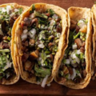
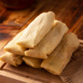
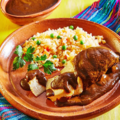
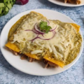
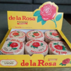
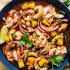
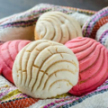
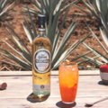

La gastronomia de Mexico es un mosaico de sabores, olores y tradiciones milenarias que fusiona la herencia prehispanica del maiz, el frijol y el chile con las influencias europeas. Su relevancia cultural es tan inmensa que en el año 2010 fue declarada como "Patrimonio Cultural Inmaterial de la Humanidad por la UNESCO", siendo una de las primeras cocinas del mundo en recibir esta distincion. Este reconocimiento global se debe a la preservacion de sus tecnicas agricolas originarias, sus complejos metodos de preparacion e ingredientes autoctonos que han conquistado paladares internacionales, convirtiendo al acto de comer en un ritual festivo de identidad nacional
|
 Tacos |
 Tamales |
Tortas |
 Mole |
 Enchiladas |
Antojitos |
 Dulces |
 Mariscos |
 Pan |
 Bebidas |
1. Tacos: De bistec, De pastor, De barbacoa, De carnitas, De cochinita pibil
2. Tamales: Verdes con pollo, De mole rojo, De chile morita, De dulce con pasas, Oaxaqueños
3. Tortas Tradicionales: Torta de jamon, Torta de albañil, Torta ahogada, Torta de tamal (Guajolota), Torta cubana, Pambazo de papa con huevo
4. Moles: Poblano, Verde con pepita, Negro oaxaqueño, Amarillo
5. Enchiladas: Verdes, De jitomate, Suizas, Mineras, Enmoladas, Enfrijoladas
6. Antojitos de Masa: Quesadillas, Gorditas, Sopes, Tlacoyos, Redonditas, Huaraches
7. Dulces Tradicionales: Mazapan, Pulparindo, Alegrias, Palanquetas, Cocadas, Camotes de Puebla
8. Ceviches y Mariscos: Aguachile verde, Ceviche estilo Acapulco, Pescado a la veracruzana, Cctel de camaron
9. Pan Dulce Tradicional: Conchas de vainilla y chocolate, Orejas de hojaldre, Mantecadas, Pan de muerto tradicional, Cocoles de piloncillo
10. Bebidas Tradicionales: Agua de horchata o Jamaica, Tequila, Mezcal, Pulque, Pozol con cacao, Atole